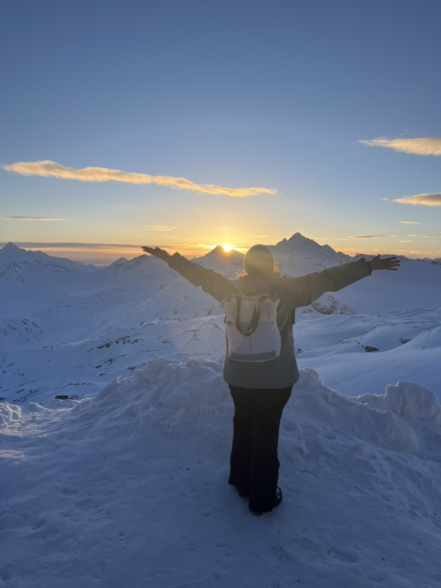
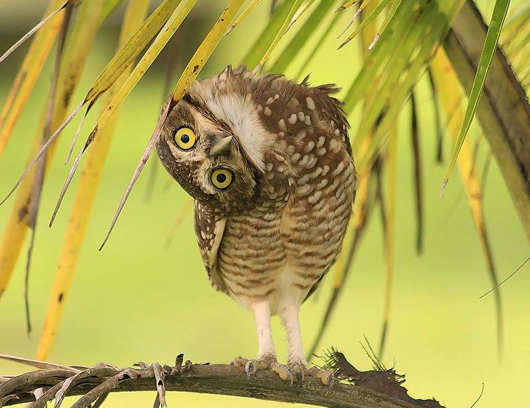
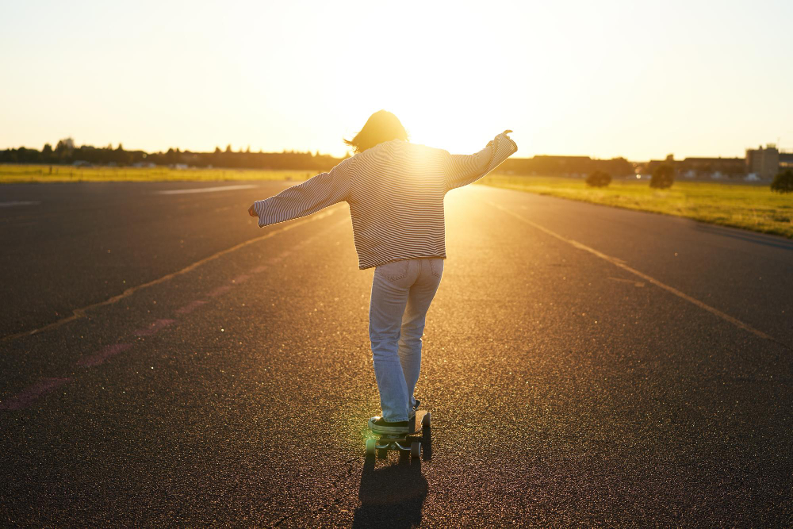

Фритрек и нулевой спринт: Подготовка к работе

Это было самое начало пути. На этом этапе важно было проникнуться основами и настроиться на учёбу. И, возможно, подумать, как новые знания могут повлиять на ваше будущее.
А что лучше всего может помочь «обнулиться» и настроиться на учебу? Правильно — отпуск!
1 спринт: Я — чистый лист
.jpg)
На первых этапах мы работали со страхами и сомнениями, которые часто испытывают новички. Один из них — страх перед чистым листом. Это, конечно же, намного сложнее, чем боязнь куска бумаги. Часто за этим ощущением скрываются более глубокие вопросы: с чего начать? а вдруг будет слишком сложно? что, если я не справлюсь?
Страх «чистого листа» не пропадает после первой сданной работы, однако уже не вызывает паники!
1 спринт: А если не получится?

Первый проект — позади! Но это всё ещё самое начало пути. Радость могла быстро померкнуть и смениться ожиданием провала. Или вы, наоборот, могли вдохновиться успехами и поверить в себя.
Первый проект стал серьезным испытанием: в какой-то момент сложности заставили меня усомниться в правильности выбора пути. Однако я понимал — именно там, где страшно, скрывается зона самого мощного профессионального роста
2 спринт: Погоня за идеалом

На этом этапе вы уже достаточно разбирались в основах вёрстки, чтобы понять, как много ещё впереди. Вы могли попытаться погнаться за идеалом и понять, что он недостижим. А, может, вы вовсе и не подвержены перфекционизму и вместо того, чтобы сделать идеально, старались просто сделать.
Погоня за идеалом не казалась безнадёжной благодаря поддержке ревьюера. Его правки помогли мне довести вёрстку до высокого уровня, а каждый совет стал ценным уроком, который я обязательно заберу с собой в будущее.
2 спринт: О тех, кто рядом

Всё это время вы были не одиноки (хотя, возможно, иногда и чувствовали, что одни против целого мира). Вас окружали одногруппники, команда сопровождения и просто близкие люди, которым можно пожаловаться, если очередной макет просто так не поддавался. Осваивать что-то новое легче, когда рядом есть единомышленники, не правда ли?
Настоящей опорой для меня стали одногруппники и старшие студенты. Их помощь была бесценной: они научили меня главному — искать не правильный ответ, а правильный путь к нему!
3 спринт: Обходные стратегии

На этом курсе вы постоянно решали разные задачи. В какой-то момент вам могло показаться, что решения просто иссякли. Значит, пришло время посмотреть на задачу под другим углом.
В такие моменты лучшим решением было взять паузу. Взгляд на задачу «со свежей головой» помогал увидеть то, что раньше ускользало, и найти выход там, где он казался невозможным.
3 спринт: Когда опускаются руки

Во время учёбы часто возникает чувство, когда не знаешь, за что хвататься. Вроде и проектную пора сдавать, и задачи хочется порешать, и в теории получше разобраться, и жизнь не забыть пожить. В такие моменты очень нужна концентрация. Вспомните, откуда вы её черпали.
Меня спасало напоминание о том, ради чего я всё это начала. Это помогало отбросить лишнее и просто делать шаг за шагом.
«Сейчас я здесь»

Сейчас вы уже очень много знаете о вёрстке. Но это только начало. Во-первых, впереди ещё много материала про «красотищу». Во-вторых, с окончанием курса учёба не заканчивается. Вёрстка — это целый мир. И этот мир постоянно меняется. Познать его полностью не получится, но это тот случай, когда важен сам процесс познания. Ведь часто путь — и есть результат.
С улыбкой вспоминаю, как в начале пути знания казались непостижимыми. Рада, что упорство помогло не сдаться: теперь вместо страха — только вдохновение.